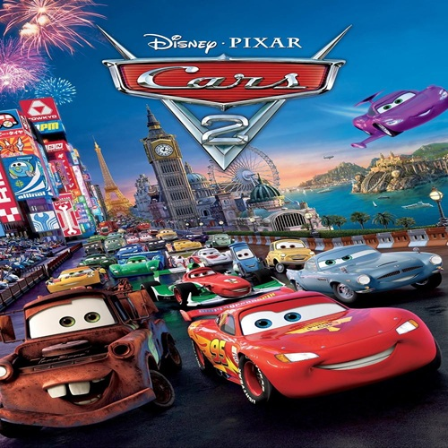
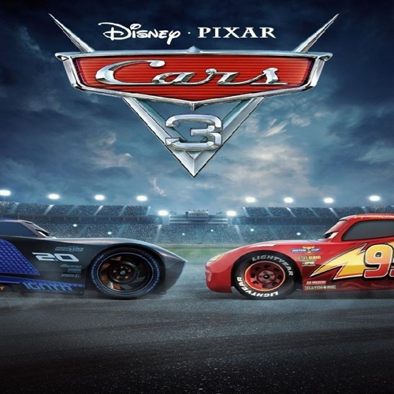

Filmes
Filmes da saga Carros.
-

2006
Carros
O filme "Carros" (2006) narra a história de Relâmpago McQueen, um carro de corrida ambicioso que, após se perder na estrada, acaba em Radiator Springs. Lá, ele é forçado a consertar a rua principal e, enquanto cumpre a punição, conhece e se apega aos moradores, aprendendo lições valiosas sobre amizade, humildade e a importância de valorizar a jornada em vez de apenas a linha de chegada. Ele descobre que o verdadeiro sucesso é compartilhado com quem o apoia.
-

2011
Carros 2
Em "Carros 2", Relâmpago McQueen e seu amigo Mate viajam para o Japão e a Europa para competir no primeiro Grande Prêmio Mundial. Enquanto McQueen foca na corrida, Mate se envolve acidentalmente em uma trama de espionagem internacional, sendo confundido com um espião americano pelos agentes britânicos Finn McMíssil e Holly Caixadibrita. Juntos, o trio precisa desvendar um plano do Professor Z e descobrir o verdadeiro mandante, que deseja sabotar a corrida e desacreditar os combustíveis alternativos.
-

2017
Carros 3
Em "Carros 3", o lendário Relâmpago McQueen precisa provar que ainda é competitivo contra uma nova geração de corredores mais rápidos e tecnologicamente avançados, especialmente o rival Jackson Storm. Para isso, ele recebe a ajuda da entusiasta treinadora de corridas, Cruz Ramirez, e com inspiração no seu antigo mentor, o Falcão e o Mestre Hudson. A trama acompanha a jornada de McQueen, que deve superar seus limites, enfrentar o medo da aposentadoria e, com Cruz, desvendar os segredos do seu legado.